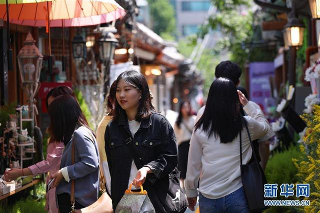
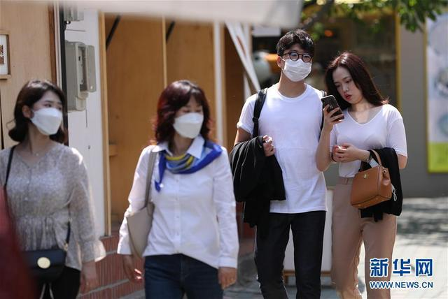
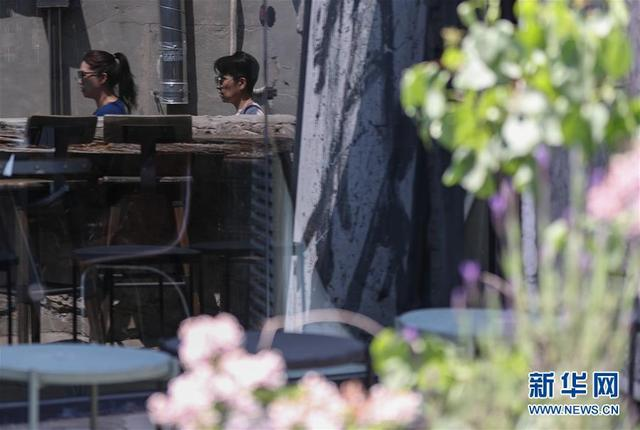
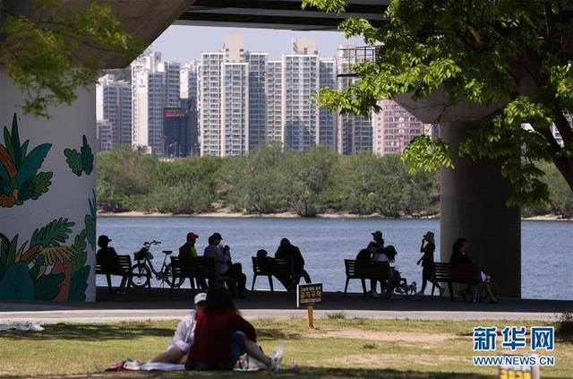
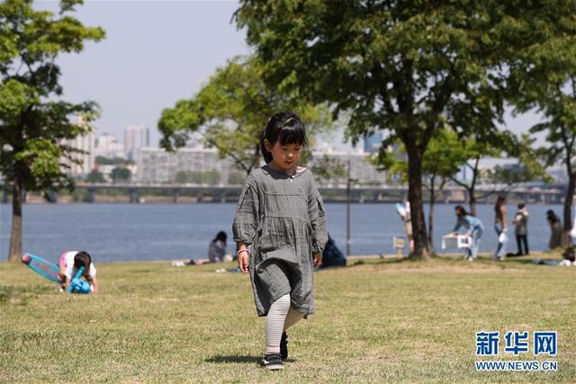
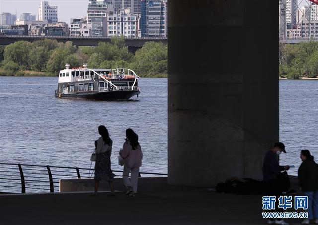
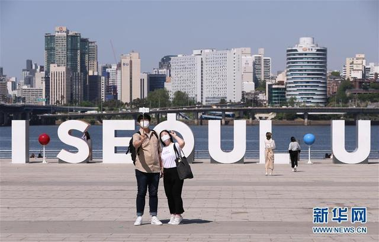
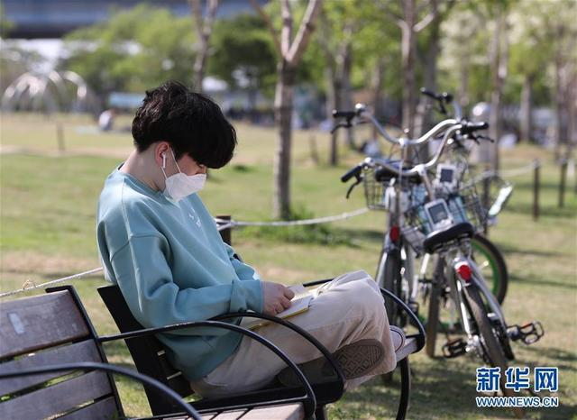

疫情形势趋稳 韩国进入生活防疫阶段

来源：【新华网】 5月6日，人们在韩国首尔益善洞逛街。 韩国鉴于国内疫情形势趋稳，从6日起进入日常生活和防疫工作并行的“生活防疫阶段”，
个人基本防疫守则包括勤洗手、周期性消毒和通风换气、人与人之间保持距离、身体不适应居家观察等。 新华社记者 王婧嫱 摄

来源：【新华网】 5月6日，人们在韩国首尔益善洞逛街。 韩国鉴于国内疫情形势趋稳，从6日起进入日常生活和防疫工作并行的“生活防疫阶段”，
个人基本防疫守则包括勤洗手、周期性消毒和通风换气、人与人之间保持距离、身体不适应居家观察等。 新华社记者 王婧嫱 摄

来源：【新华网】 5月6日，人们在韩国首尔益善洞逛街。 韩国鉴于国内疫情形势趋稳，从6日起进入日常生活和防疫工作并行的“生活防疫阶段”，个人基本防疫守则包括勤洗手、
周期性消毒和通风换气、人与人之间保持距离、身体不适应居家观察等。 新华社记者 王婧嫱 摄

来源：【新华网】 5月6日，人们在韩国首尔汝矣岛汉江公园休闲。 韩国鉴于国内疫情形势趋稳，从6日起进入日常生活和防疫工作并行的“生活防疫阶段”，个人基本防疫守则包括勤洗手、
周期性消毒和通风换气、人与人之间保持距离、身体不适应居家观察等。 新华社记者 王婧嫱 摄

来源：【新华网】 5月6日，小朋友在韩国首尔汝矣岛汉江公园玩耍。 韩国鉴于国内疫情形势趋稳，从6日起进入日常生活和防疫工作并行的“生活防疫阶段”，个人基本防疫守则包括勤洗手
、周期性消毒和通风换气、人与人之间保持距离、身体不适应居家观察等。 新华社记者 王婧嫱 摄

来源：【新华网】 5月6日，人们在韩国首尔汝矣岛汉江公园休闲。 韩国鉴于国内疫情形势趋稳，从6日起进入日常生活和防疫工作并行的“生活防疫阶段”，个人基本防疫守则包括勤洗手、
周期性消毒和通风换气、人与人之间保持距离、身体不适应居家观察等。 新华社记者 王婧嫱 摄

来源：【新华网】 5月6日，一对男女在韩国首尔汝矣岛汉江公园自拍。 韩国鉴于国内疫情形势趋稳，从6日起进入日常生活和防疫工作并行的“生活防疫阶段”，个人基本防疫守则包括勤洗手、
周期性消毒和通风换气、人与人之间保持距离、身体不适应居家观察等。 新华社记者 王婧嫱 摄

来源：【新华网】 5月6日，一名男子在韩国首尔汝矣岛汉江公园的长椅上读书。 韩国鉴于国内疫情形势趋稳，从6日起进入日常生活和防疫工作并行的“生活防疫阶段”，个人基本防疫守则包括勤洗手、
周期性消毒和通风换气、人与人之间保持距离、身体不适应居家观察等。 新华社记者 王婧嫱 摄
点此返回上一页